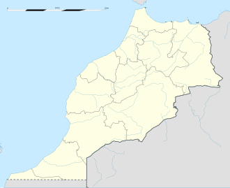
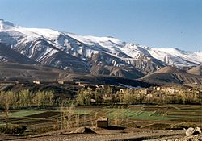
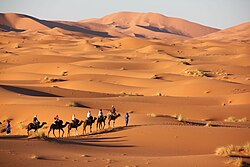
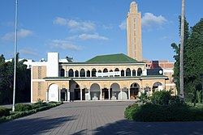
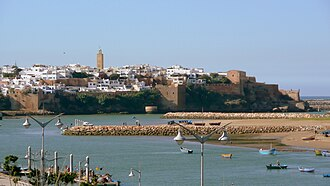
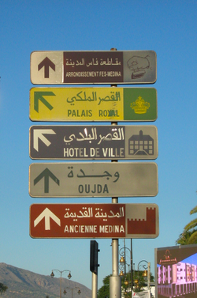

Marrocos é um país soberano localizado na região do Magrebe, no norte da África. Geograficamente, Marrocos é caracterizado por um interior montanhoso acidentado, grandes extensões de deserto e um longo litoral ao longo do oceano Atlântico e do mar Mediterrâneo.
O reino de Marrocos é banhado pelo oceano Atlântico a oeste, e pelo mar Mediterrâneo a norte, e faz fronteira com a Argélia a leste e com a Mauritânia a sul e sudeste. Abrange uma área total de 446 550. A capital, Rabat ,tem uma população de 1 618 700 habitantes (2004), destacando-se também outras cidades, como Casablanca, a maior do país, com 3 741 200 habitantes, Tânger (629 800 habitantes) e Fez (1 019 300 habitantes).[carece de fontes]
Marrocos caracteriza-se por ser um país montanhoso, destacando-se quatro grandes cadeias montanhosas: o Rife, com a orientação noroeste-sudeste, que faz, geologicamente, parte das cordilheiras do sul da Península Ibérica, e que tem como ponto mais alto o monte Jbel Tidirhine com 2 456 m, o Médio Atlas, o Alto Atlas e o Antiatlas. As três últimas integram a cordilheira do Atlas, que se estende desde a costa atlântica até a Tunísia, atravessando a Argélia.[carece de fontes]
O clima mediterrânico do país é semelhante ao do sul da Califórnia, com exuberantes florestas nas cadeias de montanhas do norte e centro do país, dando lugar a condições secas e desérticas no interior do sudeste. As planícies costeiras experimentam temperaturas notavelmente moderadas mesmo no verão, devido ao efeito da Corrente das Canárias na sua costa atlântica.
A afiliação religiosa no país foi estimada pelo Pew Research Center em 2010 como 99% muçulmana, com todos os grupos restantes representando menos de 1% da população.[53] Os sunitas formam a maioria em 67%, sendo que os muçulmanos não denominacionais são o segundo maior grupo de muçulmanos em 30%.[54] Existem cerca de 3 000 a 8 000 muçulmanos xiitas, a maioria deles residentes estrangeiros do Líbano ou do Iraque, mas também alguns cidadãos convertidos. Seguidores de várias ordens muçulmanas sufistas em todo o Magrebe e África Ocidental empreendem peregrinações anuais conjuntas ao país
Rabat ou Rabate é a capital e a segunda maior cidade de Marrocos. Localiza-se na costa do Atlântico. Tem cerca de 1,9 milhões de habitantes. A cidade foi fundada em 1150 pelo califa almóada Abde Almumine, que ali construiu uma fortaleza, uma mesquita e uma residência. Tornou-se cidade imperial em 1660 e foi a capital do Protetorado Francês em Marrocos entre 1912 e 1956.
As línguas oficiais de Marrocos são o árabe e o berbere. O grupo distintivo de dialetos árabes marroquinos é referido como darija. Aproximadamente 89,8% de toda a população pode se comunicar em algum grau em árabe marroquino. A língua berbere é falada principalmente em três dialetos, existindo também uma norma-padrão, o amazigue padrão marroquino. Em 2008, Frédéric Deroche estimou que havia 12 milhões de falantes de berbere, representando cerca de 40% da população. O censo populacional de 2004 relatou que 28,1% da população falava berbere.
مرحبا الناس(Oi pessoal em árabe) 
| Categoria | Informação |
|---|---|
| População | 36,91 milhões |
| Área (km²) | 710.850 |
| Idioma | Árabe, Berbere |
| Moeda | Dirham Marroquino (MAD) |
| Localização: África do Norte, limita com o Oceano Atlântico e o Mar Mediterrâneo | |